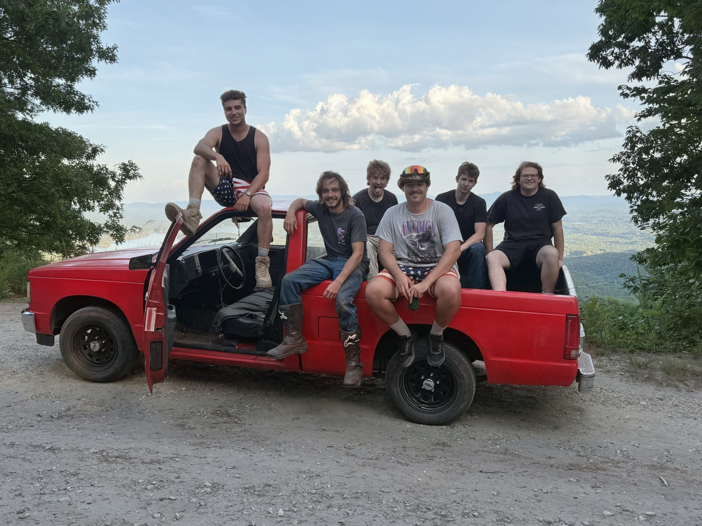

THE RESEARCHER
The Researcher
The maker behind the logbook.

RIGHT NOW
I’m at CPCC, switching into the AI degree. I’m working on all my apps and growing the landscape business. Other than that I keep things simple: time with my friends.
HOW I WORK
AI is the builder. I am the one who decides what gets built and whether it is any good.
AI lets me be the dreamer instead of getting stuck being the builder.
I move fast on the ones worth building.
OFF THE CLOCK
I keep things simple. Outside the work, most of my time goes to my friends. I drive a 1988 Chevy S10, and I am usually looking at trucks, project cars, tools, or sound systems I do not need.
THE BACKSTORY
-
AGE 16
The landscaper
Working with my hands came first: landscaping jobs, done myself, years before any of the software existed.
-
HIGH SCHOOL
The band
Played in a band through school. The first thing I built was with other people, on stage.
-
HIGH SCHOOL
Swim captain
Swim team captain.
-
UNC CHARLOTTE
ME to MET
I started in Mechanical Engineering, switched to Mechanical Engineering Technology at UNC Charlotte because I wanted a hands-on, tangible education, and learn by building the thing, not modeling it.
-
CPCC, NOW
CPCC, AI degree
I am at Central Piedmont Community College now, switching into the AI degree. I am aiming at the AI industry.
-
AUG 2026
Coding with AI
I started coding with AI in August 2026. I had leveraged AI a ton since it came out, and used it a lot for Andola; one of my first real uses was making invoice templates. About two months in, this logbook is the result: one operating business and seven software systems, most of them running without me.
PLATE 02, DAREK ANDERSON
The thread through all of it: having the capability to design and build any system or solution with simply a thought is the largest advancement in human productivity. That’s the real utility I’m testing: how much one person can do when building stops being the bottleneck. I believe advancement never truly regresses once an idea is brought into the world.
CPCC: switching into the AI degree.
Nº 04
From The Study
What I’m thinking. Realm names provisional.
Universal Schematic BOOK IN PROGRESS IN PROGRESS
A book about my AI thesis and systems thinking. A draft exists; the language is being revised.
Essays and discourse ONGOING
Longer writing on the ideas in The Hypothesis: what AI is actually good for, found empirically. Published here as field notes grow into essays.